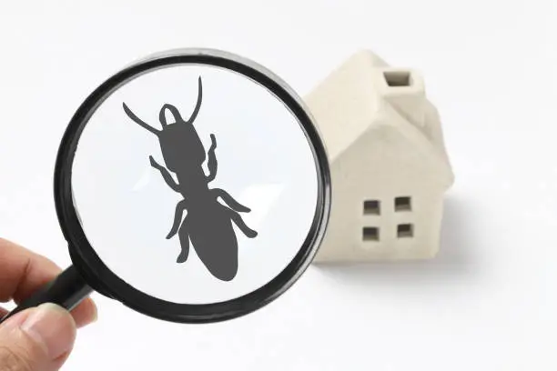

Weather • Soil • Market • Pest Detection • Multilingual • Voice Assistance — all in one hub

Accurate and localized forecasts help you plan your farming schedule effectively.
Get advice on soil fertility and crop suitability to maximize yield.

Detect crop diseases and pests early using smart AI image analysis.

Stay informed about real-time market prices from Agmarknet and local mandis.
Available in multiple Indian languages for easy accessibility to all farmers.
Ask questions and get instant answers using voice commands in your language.
AgriAssist is an integrated digital platform designed to empower farmers with all essential tools in one place. Unlike apps like Kisan Suvidha, Plantix, or Agmarknet that focus on specific aspects, AgriAssist combines weather updates, soil health insights, pest detection, market trends, multilingual support, and voice assistance — creating a truly smart farming ecosystem.